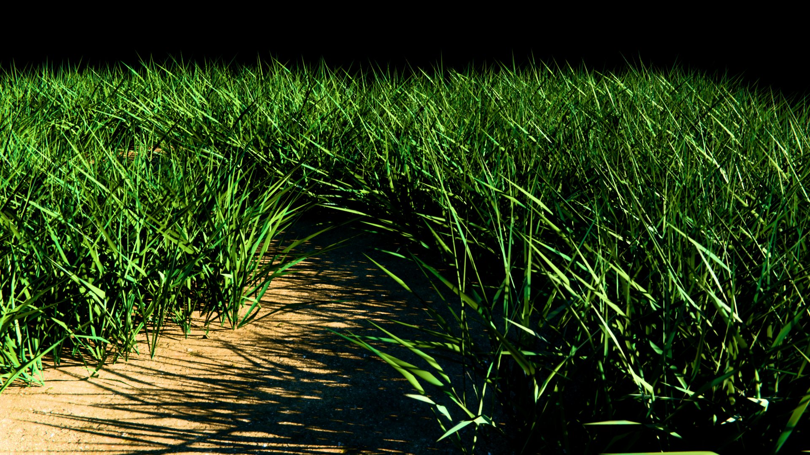

Вид 1: Базовый Ассет Травы
Процедурное распределение травинок по поверхности с использованием ноды Instance on Points. Настроена случайная вариация масштаба (Scale) и поворота (Rotation) для естественного вида.
Финальный Рендер
'">

Загрузите render1.jpg
Анимация (Ветер)
Схема Геонод (Geometry Nodes)